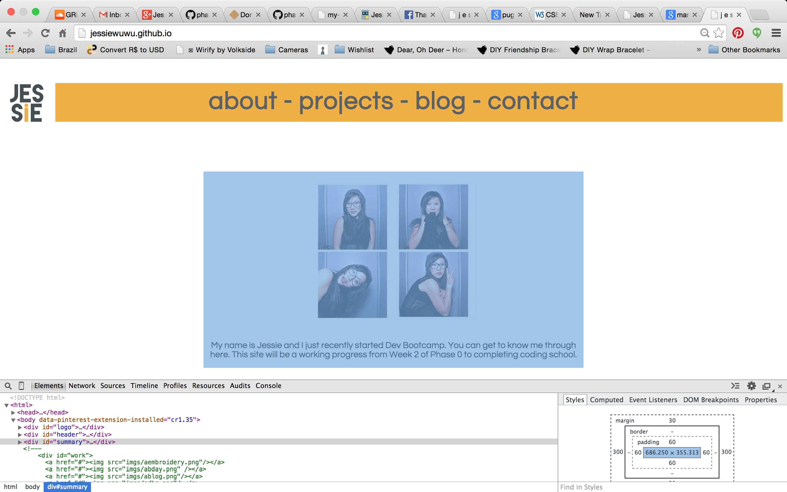
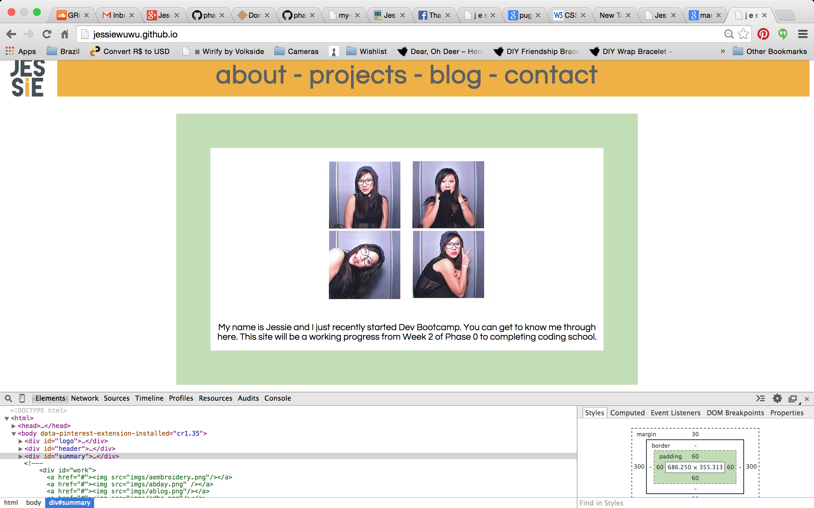

Sunday, November 9, 2014
Margin, padding, and border can be confusing at first when you are writing html and css for the layout of your page. How do you get something to be on the right of the page? What about the top right corner? What if you want to add space between the picture and the text? I will break it down in terms I know and that you may know: dogs, boxes, dogs in bubblewrap in boxes.
Meet Marnie the Dog from the internet. She's this shih tzu who has an offbalanced head, big oogley eyes, and a tongue that's forever protruding out. She's also met Tina Fey, James Franco, Demi Lovato, etc. So, basically the best dog ever.
Let's say you want to mail Marnie the Dog to your best friend. You'd want to protect Marnie from the post office roughhousing your precious package. To protect Marnie, you will add some bubblewrap so that there's room between her and the cardboard box that she's being mailed in.
You will also add some duct tape that will go around the bubblewrap. Next step is to find a box to put her in. If the box is small, Marnie in the bubblewrap will be pretty snug inside with little room to move. If you find a large box, there's a lot of room between Marnie in the bubblewrap and the box, so you'd have to fill up that extra space with a fatter dog or more bubblewrap.
Let's say there is only one sized box available. You stuff Marnie in the bubblewrap and tape into the box, slap an address label on, and she's ready to go.
Now that you have an idea of the process of packaging Marnie, you can use the same concept for margins, padding, and border for your webpage. In this case, let's say we're looking at a specific section of content on my homepage: my picture with a quick blurb about me. This is equivalent to Marnie. As you see in the blue box below, that's my content and how much room it is taking up.
If you look at the bottom right side of the corner, there is an area that shows the amount of pixels for the content, padding, border, and margin. The blue rectangular box is associated with the blue shaded content on the page. The next layer is the padding, which you see is 60px all around. It is the space between the content and the border // the bubble wrap between Marnie and the duct tape.
Think of the duct tape over Marnie's bubblewrap as the border. It goes around the padding. I decided to add a thin pink (looks orange because the border is highlighted with the orange associated with the CSS dev tools box on the bottom right) border with 5px so that you can see what it'd look like.
If I wanted a thicker border with 30px top&bottom and 20px left&right, I can increase the pixels to 60px in our CSS sheet, just like how if I wanted more duct tape on Marnie, I can wrap another six layers around the bubblewrap for a thicker layer of duct tape.
Now let's talk about margin. Margin is the box, or more accurately the size of the box that Marnie is in. If Marnie is small, the padding and borders are small as well, then you will have huge margins because of all the unused space, just like this sad-looking corgi who is probably sad because he has so much space inside the box. Following that, look at how much orange there is!
If Marnie instantly gained 10 pounds or you went crazy with the bubblewrap or duct tape, then you'd have smaller margins, like this really fat dog all cramped up in the box.
Similarily, if I change the margin from 30px top&bottom, 300px left&right to 5px each side, you will see a very thin sliver of orange. If I were to change my padding to 5px for left&right, my text is now stretched all the way out, just like that fat dog's thick body with very little bubblewrap.
And that's it! So in conclusion, when you are positioning certain elements in your page, it's a good idea to keep in mind the margin, padding, and border, in addition to absolute, fixed, relative positions and bottom, top, right, left pixels in CSS. When you think of margin, padding, and border as layers, it is a bit easier. Or better yet, think about Marnie, bubblewrap, tape, and a box. Now you have the pleasure of knowing Marnie the Dog, margin, padding, and border! As a reward, here is a video showing you how great Marnie is: